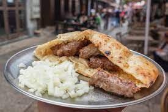

Cevapi

Description
These are Cevapi which are a meat dish famous in the Balkans. They can be made from veal, lamb or pork.
Ingridients
- Minced meeat
- Salt
- Pepper
- Onions
- Lepinja bread
- Kajmak
- Ajvar
Steps
- If not premade, make minced meat into little rolls as seen in picture
- Turn grill on to medium-high heat
- Put Cevapi on the grill
- After 2-3 minutes, flip cevapi onto their other side
- Repeat step 4 until cevapi are golden brown
- Remove cevapi from the grill
- Serve them inside the lepinja bread with the kajmak, ajvar and onions on the side